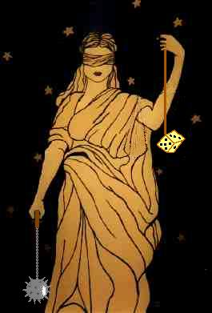

| Sainte Inquisition | |
|---|---|
 | |
| Grand inquisiteur | |
| Langue de travail | Ultrèmnaia Dervash |
| Localisation | Vercors |

Sommaire
Charte du Tribunal Ultrème
Si les tyrans se font précéder de la terreur, cette terreur ne frappe jamais que sur le peuple. Au contraire, dans l'Ultrémisme naissant, quand la marche de la révolution force le législateur de mettre la terreur à l'ordre du jour, c'est pour venger la liberté de ses ennemis; et l'échafaud, qui naguère était le partage du misérable et du faible, est enfin devenu ce qu'il doit être : le tombeau des faibles, des neutres, des ambitieux et des élites.
Détail de la procédure
Le tribunal révolutionaire est régi par le principe d'équité totale. Aussi, le hasard déterminera le fonctionnement général de la justice ultrème. La procédure sera réduite à l'extrème pour que les jurés ne subissent pas d'influences et de pressions extérieures. Elle consistera en :
- Une introduction du procureur
- Une expertise scientifique
- Les témoignages divers
- Le verdict
Le procureur : Comme stipulé ci-dessus, le procureur sera choisi au hasard parmi les ultrèmes. Il aura pour mission d'effectuer une enquête sommaire ( dont la durée ne devra pas dépasser 1 jour ), puis de présenter les chefs d'accusation au tribunal. Il ne doit pas être neutre et peut bien évidemment émettre un avis catégorique. La procédure est dans ce cas terminée et les jurés doivent alors voter dans le sens de son avis. S'il estime que l'accusé n'a pas été assez accablé, il peut demander que la procédure suive son cours et qu'il y ait expertise et audition de temoins.
Les expertises croisées : Plusieurs expertises peuvent être lancées. Les experts sont nommés par le procureur pour effectuer des analyses médicales, théologiques... qui n'ont pas pour mission de chercher des circonstances atténuantes mais des griefs contre l'accusé.
Les experts peuvent eux aussi émettre une sentence pour abréger la procédure et passer directement au verdict. Dans le cas contraire, il y a audition de temoins.
L'audition des temoins : Les temoins sont eux aussi choisis au hasard parmi la population ultrème. Ils n'ont pas l'obligation de se mettre au courant des faits pour émettre un avis. Ils ont les mêmes attributs de jugement que le procureur et les experts.
Le verdict : Les jurés (bien évidemment choisis au hasard) entrent en scène si les autres membres du tribunal ont laissé la procédure se poursuivre jusqu'à cette étape. La condamnation à la peine capitale par un seul juré est une condition suffisante pour la peine de mort. La peine la plus sévère est celle qui sera appliquée.
Les peines
Beaucoup de peines peuvent être prononcées par le tribunal. Elles sont de deux sortes : les peines légères (justice pour les ultrèmes) et la peine de mort (justice pour les dégénérés). Les sentences se font en fonction de l'inspiration des membres du tribunal et du public.
Les peines légères : Elles vont du coup de bilboquet clouté à la privation de stimulos (peine la plus grave) pour une durée déterminée. L'imagination des jurés est la seule limitation à la diversité des peines.
Les peines capitales : Il n'y a là non plus aucune limite à l'inventivité ultrème. La coutume veut que les condamnés soient noyés dans du jus de tympan porté à ébullition ou bastonnés à mort à coups de bilboquet clouté. Mais il n'y a là aucune obligation, car n'oublions pas que le but des ultremistes est de détruire toute norme.
Loi des suspects
Sont reputés gens suspects ceux qui, soit par leur conduite, soit par leurs relations, soit par leurs propos ou leurs écrits, se sont montré partisans de la tyrannie et ennemis de la liberté.